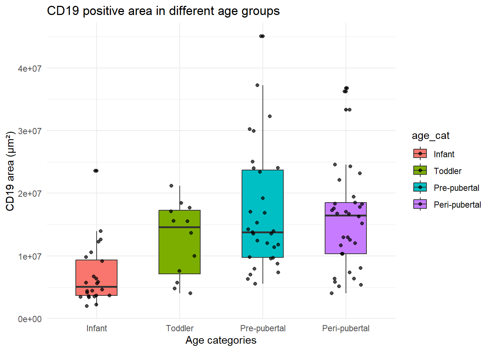
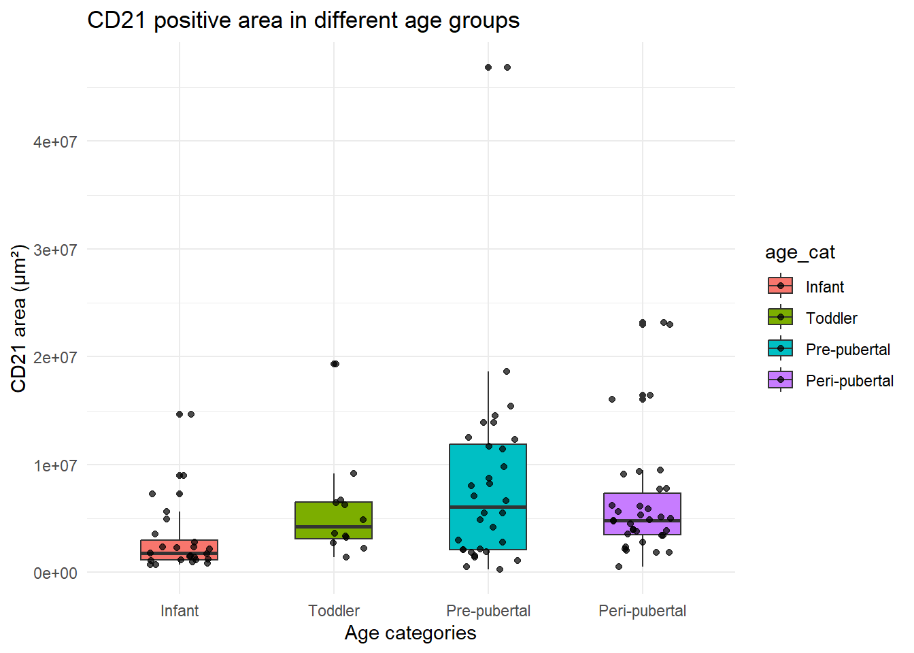

library(tidyverse)
library(readxl)IHC Data
Packages used
Import master data file
data = read_excel("D:/Quarto host files/IHC_master.xlsx")Check the data now
glimpse(data)Rows: 108
Columns: 64
$ Thymus <chr> "Thymus 2", "Thymus 2", "…
$ Age <chr> "7m, 2d", "7m, 2d", "7m, …
$ Categories <chr> "Infant", "Infant", "Infa…
$ Section <chr> "2.1", "2.2A", "2.2000000…
$ `All Positive` <dbl> 0, 0, 0, 0, 0, 0, 0, 0, 0…
$ `CD21 + CD19 Positive` <dbl> 0, 0, 0, 0, 0, 0, 0, 0, 0…
$ `CD21 + BCL6 Positive` <dbl> 0, 0, 0, 0, 0, 0, 0, 0, 0…
$ `CD19 + BCL6 Positive` <dbl> 0, 0, 0, 0, 0, 0, 0, 0, 0…
$ `Only CD21 Positive` <dbl> 0, 0, 0, 0, 0, 0, 0, 0, 0…
$ `Only CD19 Positive` <dbl> 0, 0, 0, 0, 2, 1, 1, 0, 0…
$ `Only BCL6 Positive` <dbl> 0, 0, 0, 0, 0, 0, 0, 0, 0…
$ `Total CD21 Positive` <dbl> 0, 0, 0, 0, 0, 0, 0, 0, 0…
$ `Total CD19 Positive` <dbl> 0, 0, 0, 0, 2, 1, 1, 0, 0…
$ `CD19 Tissue Area Analyzed (μm²)` <dbl> 218218976, 244650560, 217…
$ `CD19 Area (μm²)` <dbl> 5738681, 3543524, 6727770…
$ `CD19 Weak Area (μm²)` <dbl> 2317004, 2084721, 3185500…
$ `CD19 Moderate Area (μm²)` <dbl> 1131670.4, 745244.7, 1346…
$ `CD19 Strong Area (μm²)` <dbl> 2290007.2, 713557.9, 2195…
$ `CD19 DNA Area (μm²)` <dbl> 154831888, 181182592, 142…
$ `CD19 BKGD Area (μm²)` <dbl> 3882066, 3277039, 3435594…
$ `% CD19 Positive Tissue` <dbl> 2.629781, 1.448402, 3.098…
$ `% CD19 Positive Tissue (weak)` <dbl> 1.061779, 0.852122, 1.467…
$ `% CD19 Positive Tissue (moderate)` <dbl> 0.518594, 0.304616, 0.620…
$ `% CD19 Positive Tissue (strong)` <dbl> 1.049408, 0.291664, 1.011…
$ `% DNA Positive Tissue` <dbl> 70.95253, 74.05771, 65.67…
$ `% BKGD Positive Tissue` <dbl> 1.778977, 1.339477, 1.582…
$ `CD19 Average Positive Optical Density` <dbl> 0.361160, 0.270572, 0.343…
$ `CD19 DNA Average Positive Optical Density` <dbl> 0.453997, 0.444051, 0.433…
$ `CD19 BKGD Average Positive Optical Density` <dbl> 0.237105, 0.208072, 0.212…
$ `% CD19 Negative Tissue` <dbl> 25.59020, 23.91391, 30.66…
$ `CD21 Tissue Area Analyzed (μm²)` <dbl> 238645856, 245135728, 206…
$ `CD21 Area (μm²)` <dbl> 2794418.8, 4949142.5, 145…
$ `CD21 Weak Area (μm²)` <dbl> 1946252.1, 3303030.5, 540…
$ `CD21 Moderate Area (μm²)` <dbl> 443148.75, 884863.75, 188…
$ `CD21 Strong Area (μm²)` <dbl> 405017.88, 761248.38, 727…
$ `CD21 DNA Area (μm²)` <dbl> 157355104, 164098496, 149…
$ `CD21 BKGD Area (μm²)` <dbl> 4354785.00, 10589132.00, …
$ `% CD21 Positive Tissue` <dbl> 1.170948, 2.018940, 0.705…
$ `% CD21 Positive Tissue (weak)` <dbl> 0.815540, 1.347429, 0.261…
$ `% CD21 Positive Tissue (moderate)` <dbl> 0.185693, 0.360969, 0.091…
$ `% CD21 Positive Tissue (strong)` <dbl> 0.169715, 0.310542, 0.352…
$ `% CD21 DNA Positive Tissue` <dbl> 65.93666, 66.94190, 72.59…
$ `% CD21 BKGD Positive Tissue` <dbl> 1.824790, 4.319702, 0.081…
$ `CD21 Average Positive Optical Density` <dbl> 0.260792, 0.252763, 0.449…
$ `CD21 DNA Average Positive Optical Density` <dbl> 0.392601, 0.358279, 0.365…
$ `CD21 BKGD Average Positive Optical Density` <dbl> 0.216457, 0.244253, 0.186…
$ `% CD21 Negative Tissue` <dbl> 32.03041, 28.86123, 26.99…
$ `BCL6 Tissue Area Analyzed (μm²)` <dbl> 219857104, 273106880, 209…
$ `BCL-6 Area (μm²)` <dbl> 35492076, 22197608, 33557…
$ `BCL-6 Weak Area (μm²)` <dbl> 16796118, 11604961, 17025…
$ `BCL-6 Moderate Area (μm²)` <dbl> 7590232.5, 4555713.5, 727…
$ `BCL-6 Strong Area (μm²)` <dbl> 11105725.0, 6036933.5, 92…
$ `BCL6 DNA Area (μm²)` <dbl> 143410432, 166257456, 139…
$ `BCL6 BKGD Area (μm²)` <dbl> 10450517.0, 16926290.0, 6…
$ `% BCL-6 Positive Tissue` <dbl> 16.143248, 8.127810, 16.0…
$ `% BCL-6 Positive Tissue (weak)` <dbl> 7.639561, 4.249238, 8.130…
$ `% BCL-6 Positive Tissue (moderate)` <dbl> 3.452348, 1.668106, 3.476…
$ `% BCL-6 Positive Tissue (strong)` <dbl> 5.051338, 2.210465, 4.418…
$ `% BCL6 DNA Positive Tissue` <dbl> 65.22893, 60.87633, 66.71…
$ `% BCL6 BKGD Positive Tissue` <dbl> 4.753322, 6.197680, 3.306…
$ `BCL-6 Average Positive Optical Density` <dbl> 0.336849, 0.315995, 0.320…
$ `BCL6 DNA Average Positive Optical Density` <dbl> 0.414238, 0.357134, 0.481…
$ `BCL6 BKGD Average Positive Optical Density` <dbl> 0.269646, 0.281178, 0.265…
$ `% BCL6 Negative Tissue` <dbl> 24.93337, 31.28863, 24.94…#data = data |> mutate(Section = as.numeric(Section))
#data = data |> mutate(Section = round(Section, 1))Clean up the data
Change the class of the section column
data = data |>
mutate(Section = ifelse(
grepl("^\\d+\\.?\\d*$", Section), # Checks if purely numeric (integer or decimal)
as.character(round(as.numeric(Section), 1)), # Round and convert back to character
Section # Keep original for non-numeric entries
))Change the column names
colnames(data)[3] = "age_cat"
colnames(data)[4] = "section"
colnames(data)[5] = "all_positive"
colnames(data)[6] = "follicles"
colnames(data)[7] = "cd21_bcl6_positive"
colnames(data)[8] = "cd19_bcl6_positive"
colnames(data)[9] = "only_cd21_positive"
colnames(data)[10] = "only_cd19_positive"
colnames(data)[11] = "only_bcl6_positive"
colnames(data)[12] = "total_cd21_positive"
colnames(data)[13] = "total_cd19_positive"
colnames(data)[14][1] "CD19 Tissue Area Analyzed (μm²)"data |> filter(!is.na(`CD19 Area (μm²)`)) |>
group_by(age_cat) |>
mutate(age_cat = factor(age_cat, levels = c("Infant", "Toddler", "Pre-pubertal", "Peri-pubertal"))) |>
ggplot(aes(x = age_cat, y = `CD19 Area (μm²)`, fill = age_cat)) +
geom_boxplot(width = 0.5) +
geom_jitter(position = position_jitter(width = 0.2), alpha = 0.7) +
scale_color_brewer(palette = "Set2") +
theme_minimal() +
labs(
title = "CD19 positive area in different age groups",
x = "Age categories",
y = "CD19 area (μm²)"
)
data |> filter(!is.na(`CD21 Area (μm²)`)) |>
group_by(age_cat) |>
mutate(age_cat = factor(age_cat, levels = c("Infant", "Toddler", "Pre-pubertal", "Peri-pubertal"))) |>
ggplot(aes(x = age_cat, y = `CD21 Area (μm²)`, fill = age_cat)) +
geom_boxplot(width = 0.5) +
geom_jitter(position = position_jitter(width = 0.2), alpha = 0.7) +
scale_color_brewer(palette = "Set2") +
theme_minimal() +
labs(
title = "CD21 positive area in different age groups",
x = "Age categories",
y = "CD21 area (μm²)"
)